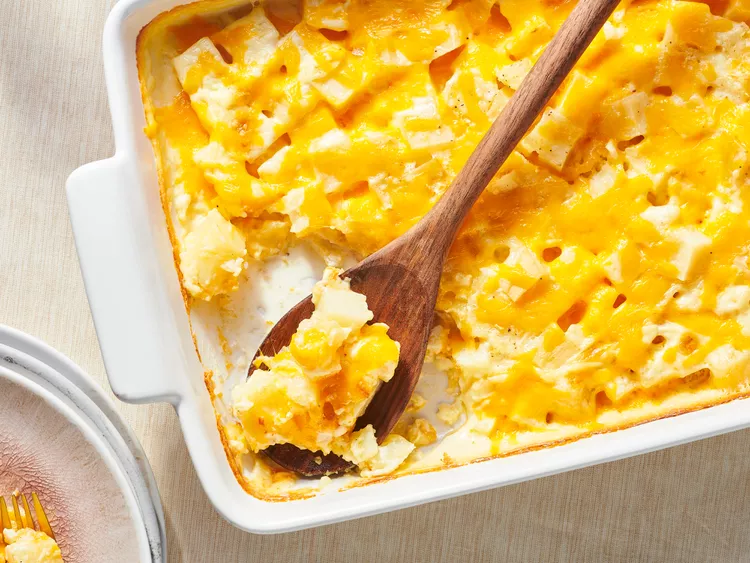

Steakhouse au Gratin Potatoes
Description
These super creamy and rich restaurant-style potatoes will be gobbled up fast.
They are excellent as leftovers warmed up in the microwave with eggs and bacon the next day.
They are not a light or low-fat dish. Save this for a special occasion.

Ingredients
- 1 tablespoon butter
- 3 russet potato, peeled and cubed
- 1 cub heavy cream
- 1/2 cup 2% reduced-fat milk
- 4 cloves garlic, minced
- 2 tablespoons all-purpose flour
- salt and black pepper to taste
- 1 cup grated medium Cheddar cheese
Ingredients
- Gather the ingredients. Preheat an oven to 350 degrees F (175 degrees C).
- Grease one 9x13 inch baking pan with butter. Spread potatoes evenly in the pan.
- Whisk together heavy cream, milk, garlic, flour, salt, and pepper in a large bowl. Pour cream mixture over the potatoes. Cover with foil.
- Bake in the preheated oven for 20 minutes, then remove the foil. Continue baking until the potatoes are easily pierced with a fork, about 40 minutes.
- Remove potatoes from the oven and sprinkle Cheddar cheese on top. Return to oven and bake until the cheese is melted, 5 to 10 minutes. Allow to cool for 5 minutes before serving.